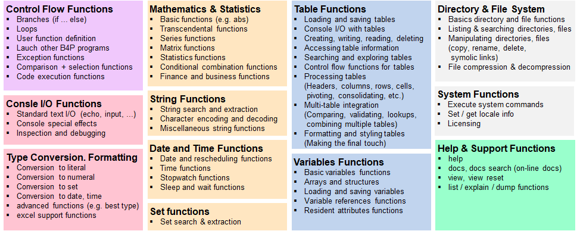

Introduction
B4P provides a large and comprehenisve library of different functions.
Use the navigator bar to deep-dive into them. Various fucntions can be called as procedures, others as
functions in expressions only, or in both.
Control flow functions are a variant of functions called as procedures which will then determineif the
subsequent statements or blocks will be executed once, repeatedly, or not.
